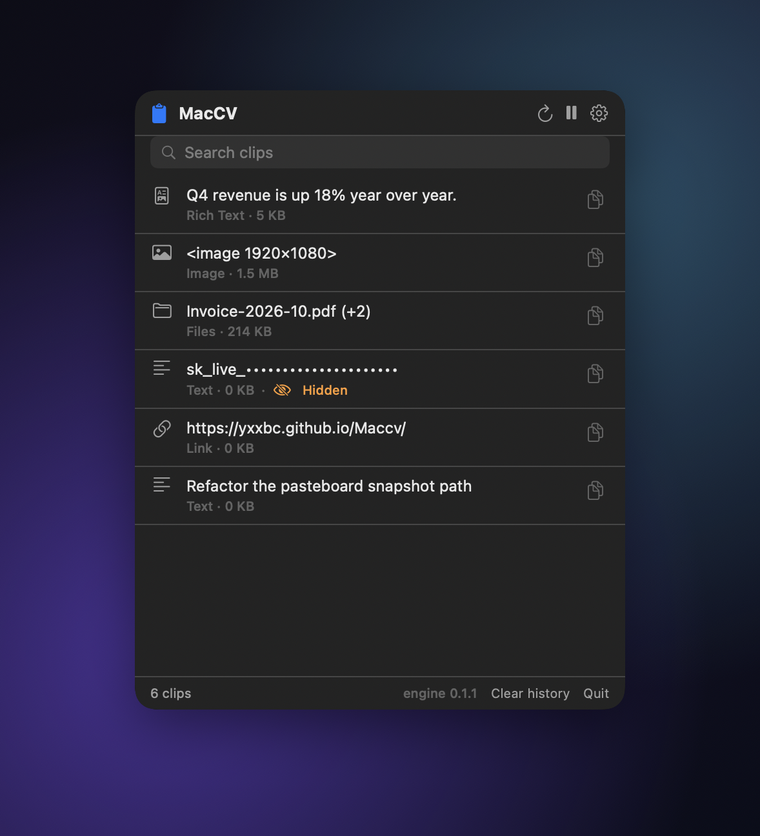

A fast, light,
private clipboard
Native macOS pasteboard fidelity, with a Rust engine — and the option to paste without the clipboard at all.

Three commitments
Specific enough to be checked. Where macOS limits them, this page says so rather than implying otherwise.
Fast
Speed decided the architecture, not the other way round. The Rust engine is a static library linked into the app: no IPC, no serialization, no helper process.
- Change detection in 0.53 µs
- Polling, so no event tap and no Accessibility permission needed just to notice a copy
- Direct Objective-C message sends underneath
Light
An idle clipboard manager should be invisible. The watcher polls at 400 µs right after a copy, then backs off toward 250 ms while nothing changes.
- No timer in the UI layer
- History in memory, bounded by your choice
- 1.9 MB release bundle
Private
You can paste without the clipboard ever seeing the content, so no other process can observe it. That is a real guarantee — and it comes with real costs, listed below.
- Concealed entries are never recorded
- Sensitive values are masked when stored, not just drawn
- Nothing leaves your Mac
Measured on Apple silicon and asserted by the test suite, not measured once by hand.
What “private” can honestly mean
Most clipboard managers overstate this. Here is the accurate version.
The uncomfortable fact
Once content is on the system pasteboard, any application on the Mac can read it. That is not a missing feature — it is how macOS is designed. There is no API to write to the pasteboard privately.
NSPasteboardContentsOptionsCurrentHostOnly stops syncing to your other devices, not to other apps. AppKit has no concealed or transient flag; the org.nspasteboard.ConcealedType convention is honoured only voluntarily. And NSPasteboardAccessBehavior governs whether this process may read — never whether anyone else may.
So: paste without the clipboard
With the setting enabled, choosing “Paste Without Clipboard” sends the entry to the frontmost app as synthetic keystrokes. The content never enters a shared channel, so no other process can observe it. This is the only mechanism that actually delivers the guarantee.
Its honest costs
It needs the Accessibility permission, because injecting events into another app is exactly what that permission gates. It is slower — events arrive at typing pace. And it is text only: an image has no keystroke representation, so images still take the clipboard path.
| Control | What it actually guarantees |
|---|---|
| History in the app container | Other applications cannot read your history. Only the pasteboard write is shared, never the log. |
| Skip concealed entries | Entries a password manager marked concealed are never recorded — honouring a stated intent rather than guessing. |
| Mask sensitive content | Card numbers, API keys, JWTs, private keys, credentialed URLs, emails and ID numbers are redacted when recorded, not only when displayed. |
| Confirm before replacing itself | A downloaded update is verified and then presented. MacCV never silently rewrites its own bundle. |
MacCV cannot stop another app from reading the clipboard. Nothing can. If you need that, use Paste Without Clipboard — or don’t put the secret on the clipboard. This page says so plainly because a privacy claim you cannot verify is worse than no claim at all.
Everything the pasteboard holds, not just text
Most managers flatten to a string. Copy a table and you get tab-separated text; copy from a design tool and you get a bitmap. MacCV keeps every representation and replays it byte-for-byte.
| Category | Types |
|---|---|
| Text | public.utf8-plain-text, tab-separated values |
| Rich text | public.rtf, com.apple.flat-rtfd, public.html |
| Images | public.png, public.tiff, com.adobe.pdf |
| Files | public.file-url — multi-file copies stay multi-file |
| Links | public.url |
| Colour | com.apple.cocoa.pasteboard.color, resolved to sRGB |
| Sound | com.apple.cocoa.pasteboard.sound |
| Fonts, rulers | com.apple.cocoa.pasteboard.font, …ruler |
| Anything else | Custom UTIs, preserved and replayed verbatim |
A single copy can carry several at once — a paragraph from Safari arrives as plain text, RTF and HTML — and MacCV keeps all of them, so it can paste into whichever the target app asks for.
Updates that do not say “damaged”
An app that replaces itself with a downloaded bundle inherits the quarantine attribute from its parent, and macOS refuses to launch a quarantined, non-notarized replacement. The usual result is the misleading “MacCV is damaged and can’t be opened” dialog. The order of operations is what prevents it.
- Download to a staging directory
- Verify the SHA-256 — a mismatch deletes the file and stops
- Verify the code signature with
spctl - Only then clear
com.apple.quarantine - Report which of those actually succeeded
Clearing the flag before verification would defeat the flag entirely — which is why an update whose signature does not validate is reported as such and left quarantined rather than silently installed. MacCV does not swap its own running bundle either: a half-completed replacement of a live app is worse than asking you to drag one file, so the verified bundle is revealed in Finder and you finish the job.
Build it yourself
Requires macOS 27, Xcode 27, Rust 1.85+ and XcodeGen. The engine builds and tests on its own; the Xcode project is generated from a single YAML file.
git clone https://github.com/yxxbc/Maccv.git
cd Maccv
cargo test # the Rust engine, 109 tests
cargo build --release -p maccv-ffi
cd apps/mac
xcodegen generate # project.yml is the source of truth
xcodebuild -scheme MacCV -configuration Release buildEvery layer can check itself, including the compiled app, which exercises Swift → C ABI → Rust end to end against a process-private pasteboard so it never touches your real clipboard.
Where it is going
Shipped
Full-type fidelity, adaptive watching, multi-item copies, the menu-bar panel, paste without the clipboard, sensitive masking, in-app updates with signature verification, and a bilingual interface.
Next
On-disk history that survives relaunch, a global hotkey, drag and drop, pinned entries and per-app rules.
Eventually
Notarization, so the app opens without a Gatekeeper prompt.